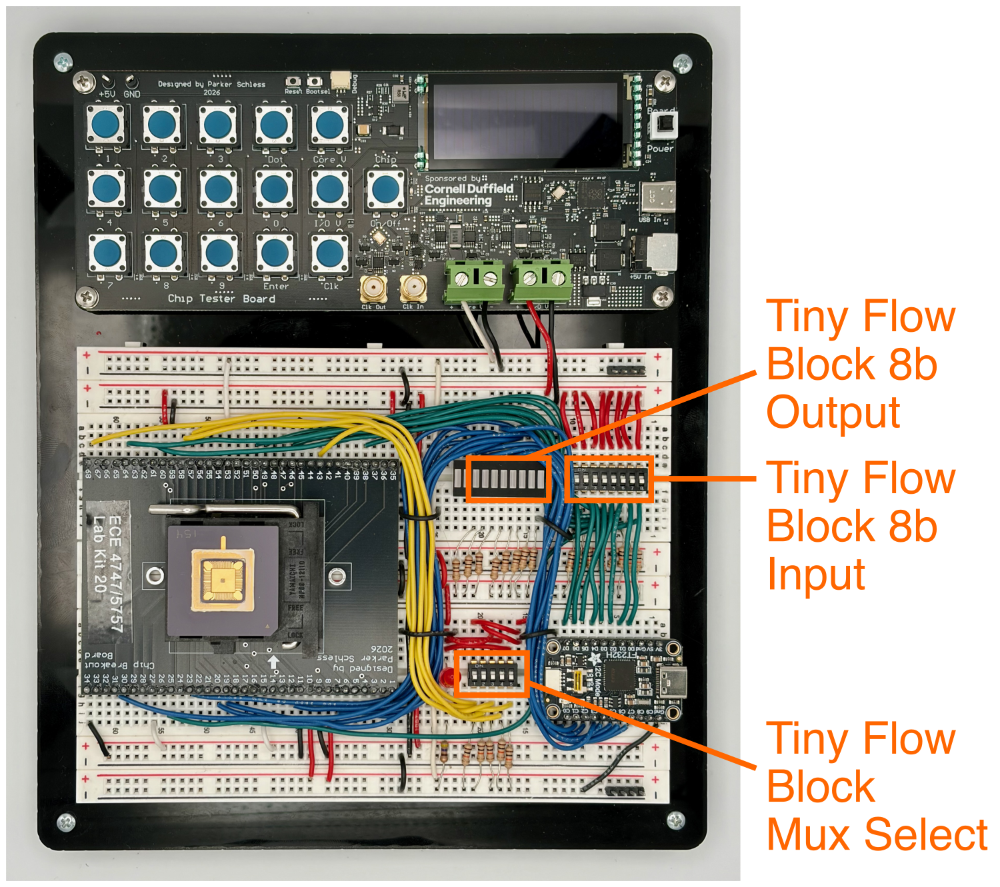
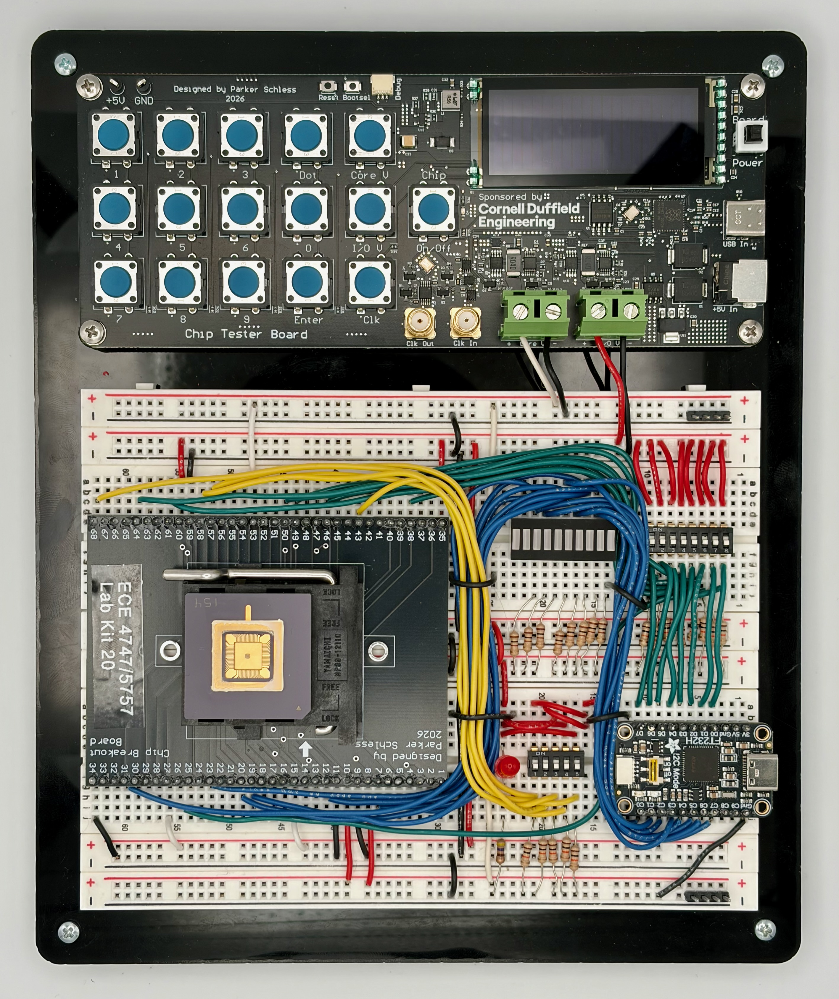
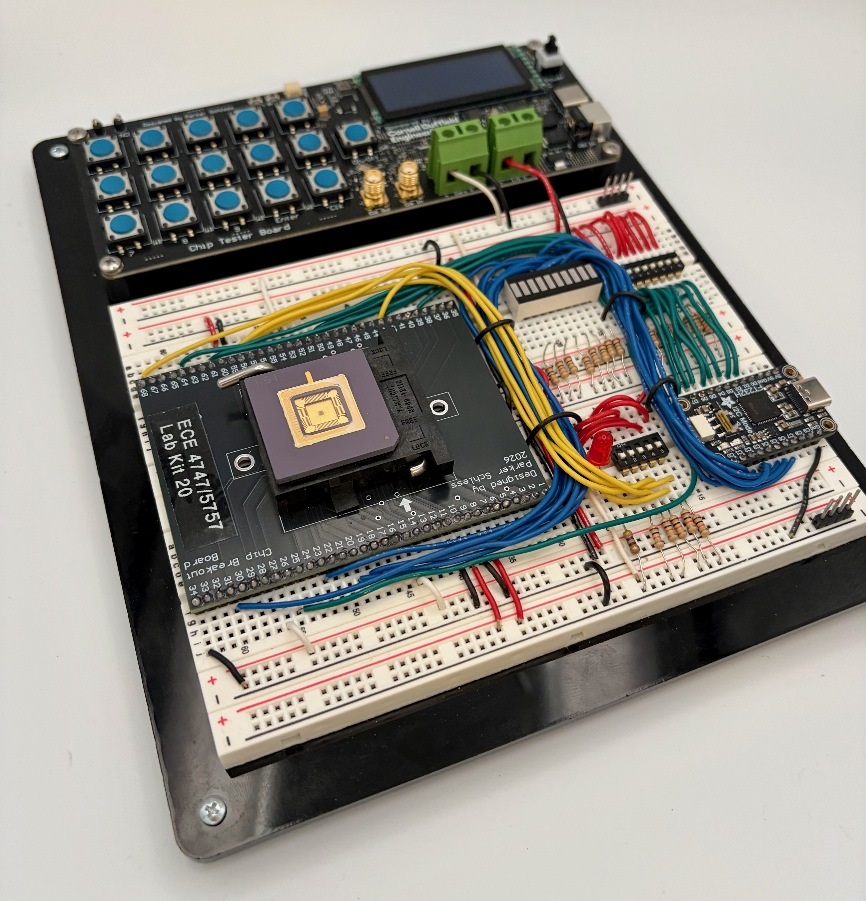
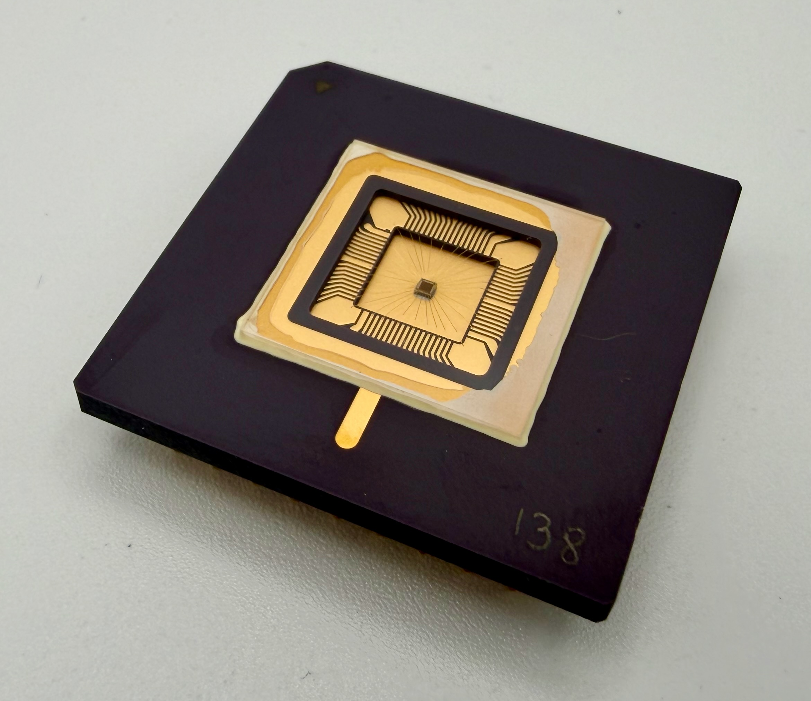
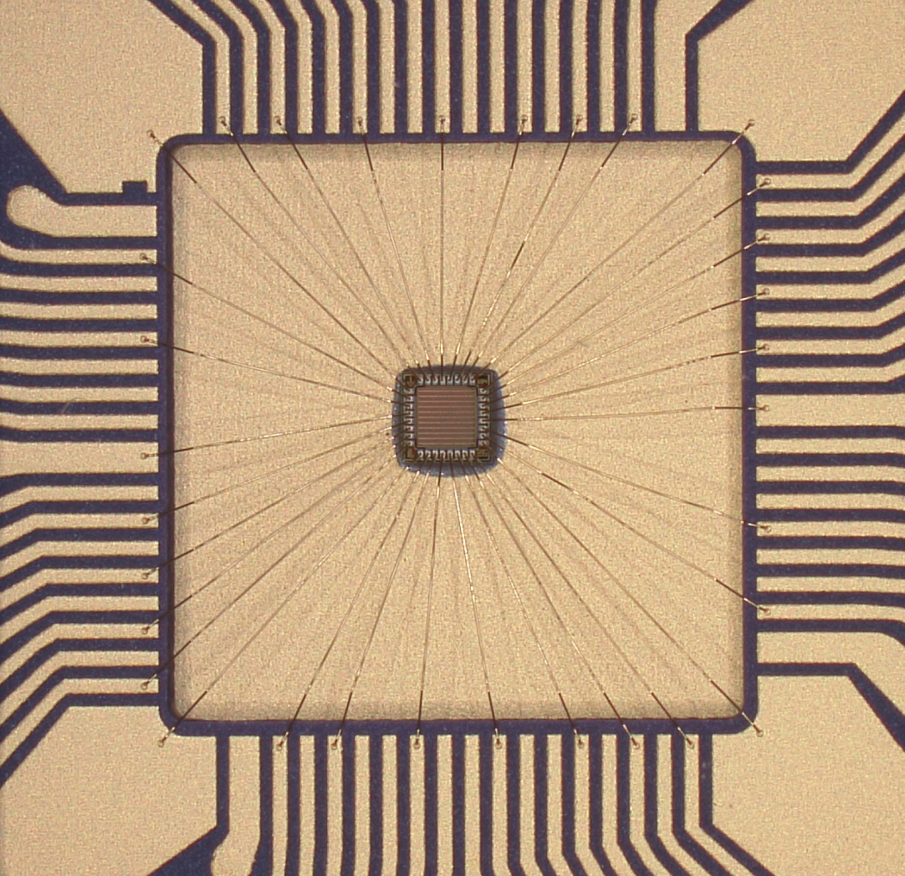
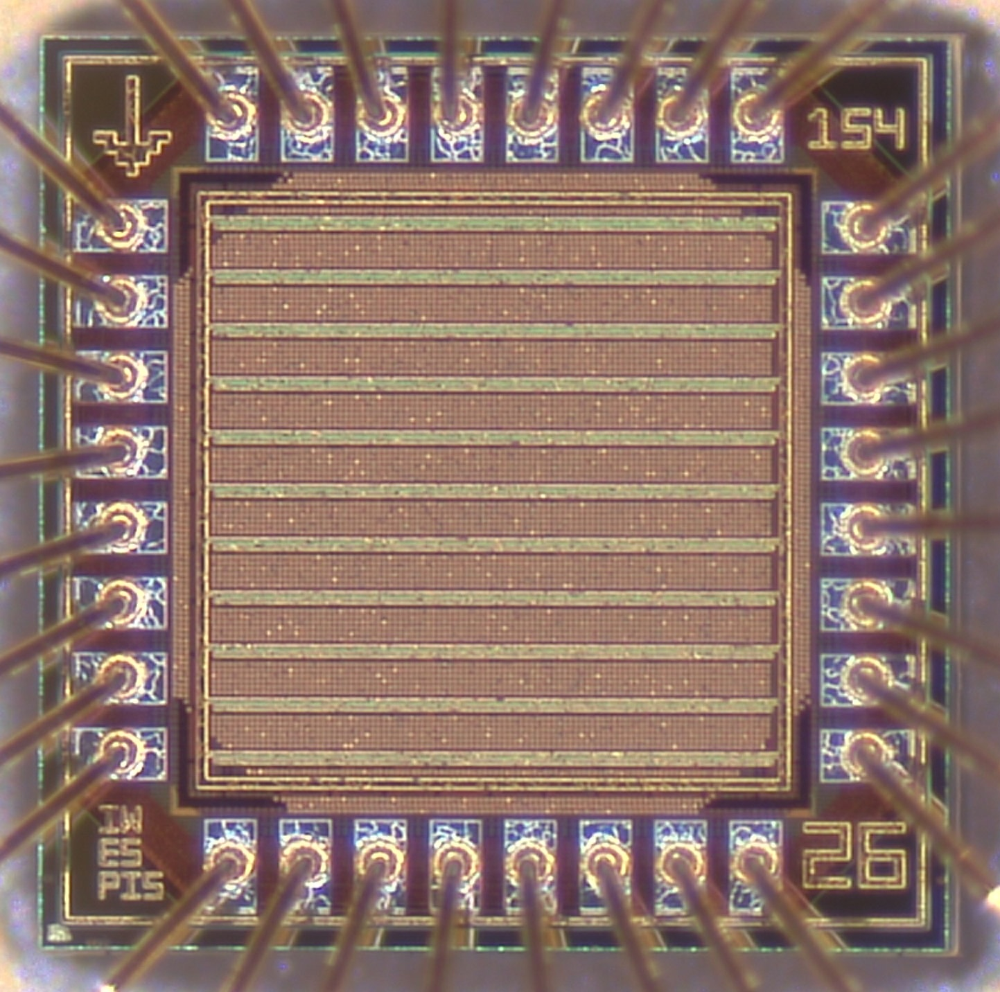
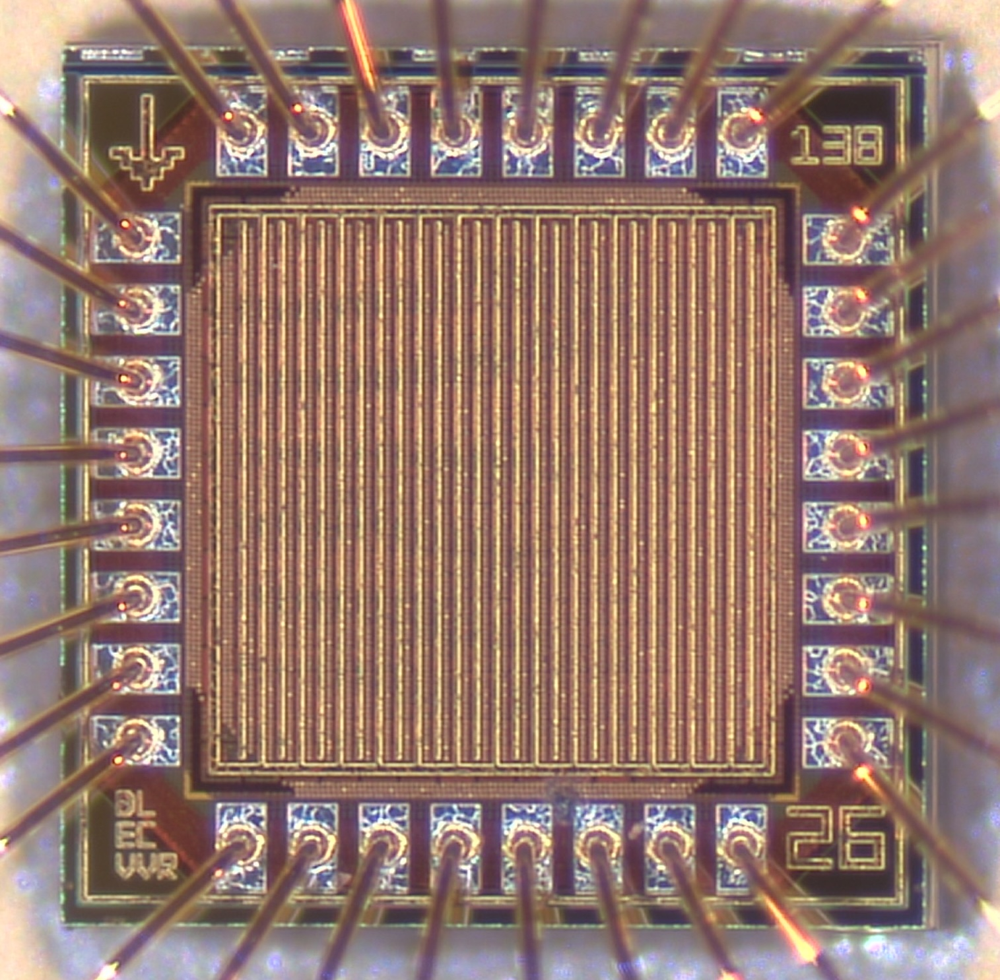
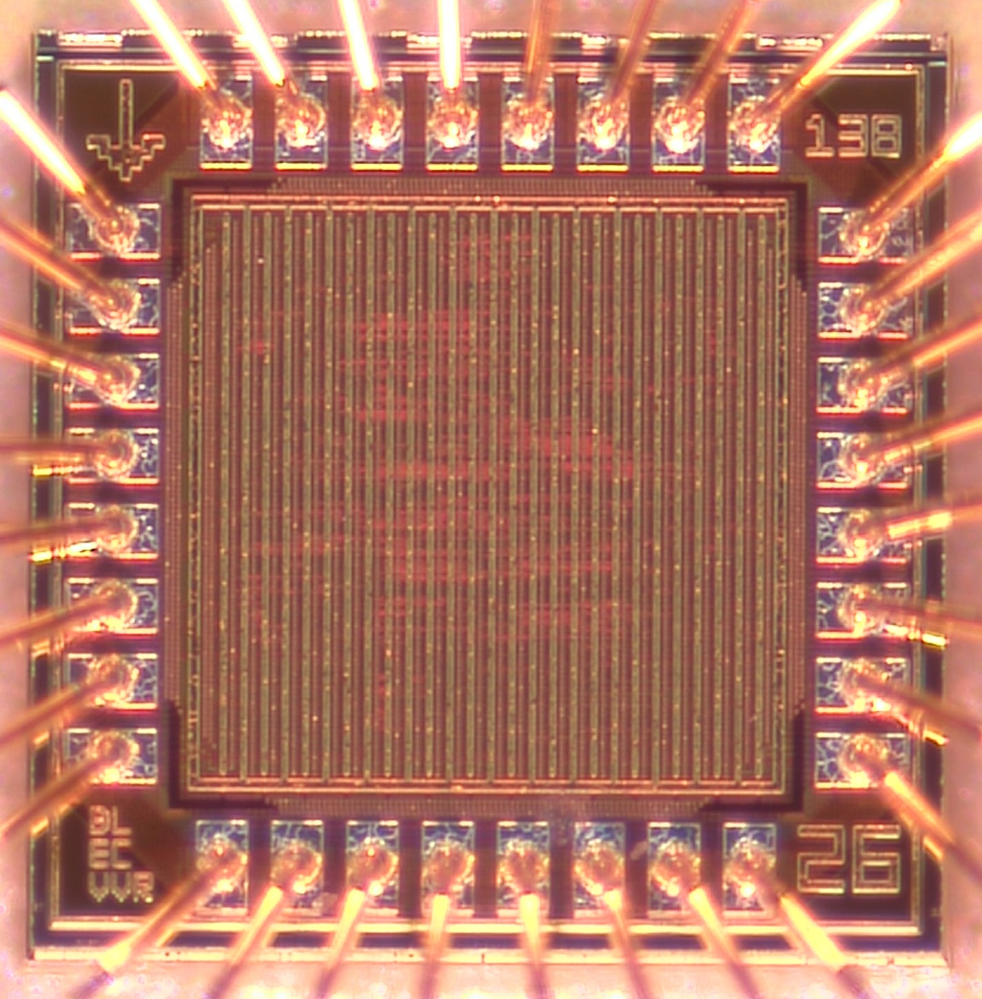
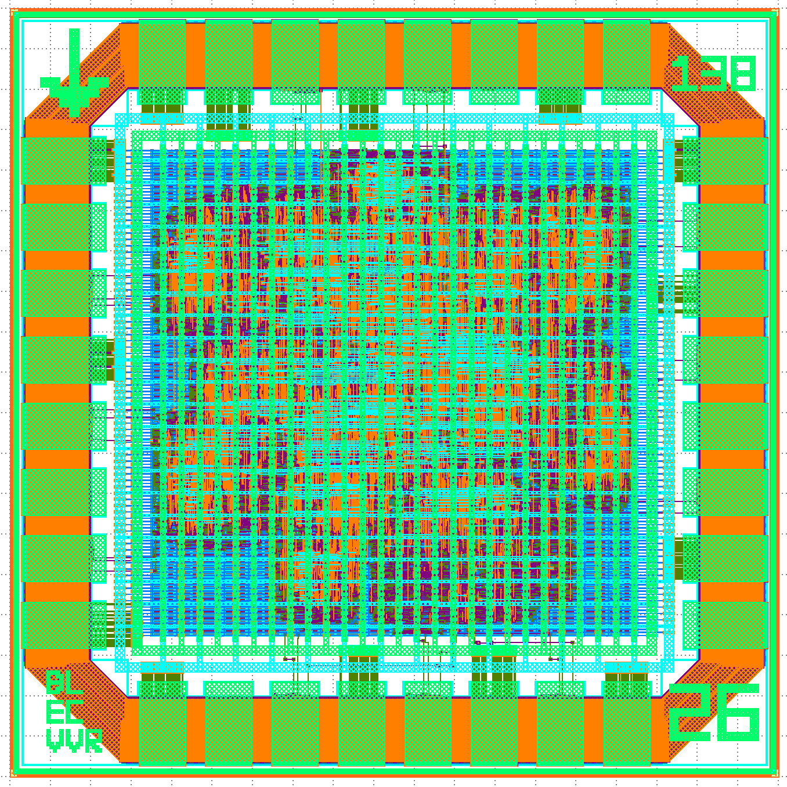
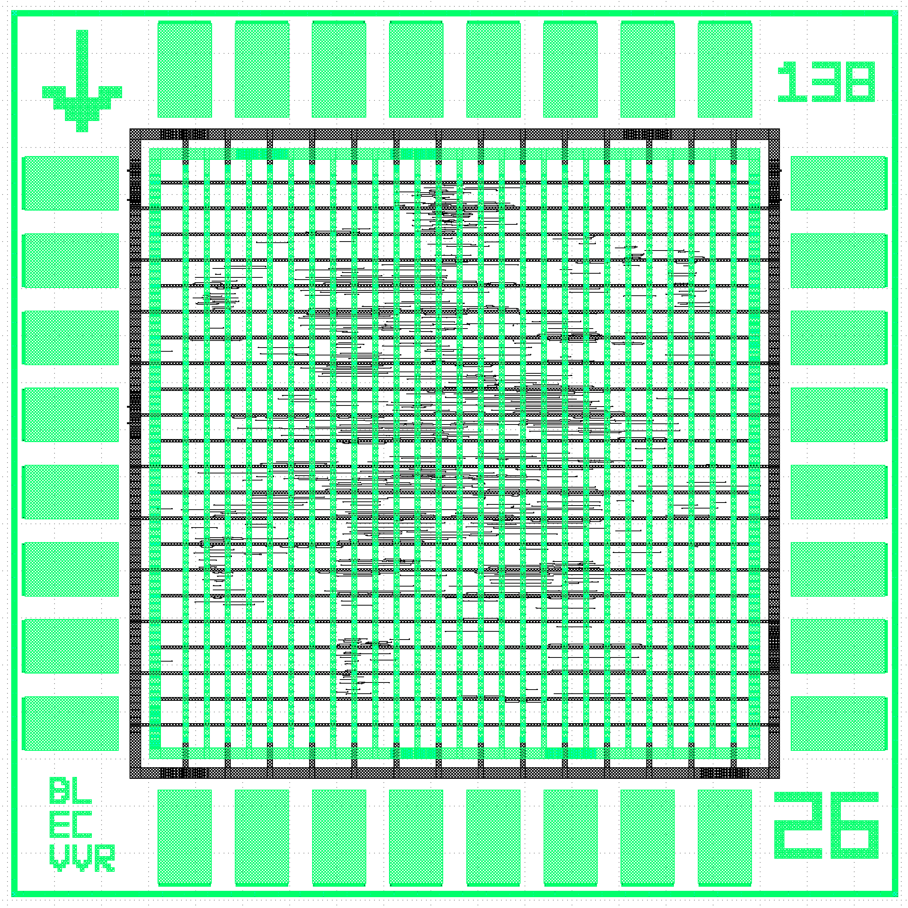

Lab 6: Tiny Flow Chip Testing
You have now successfully tested your project 2 accelerator tape-out! In this final lab, you will test your projec 1 tiny flow tape-out. You will also take photos of your chip testing platform and your project 2 chip for your final report, and at the very end of the lab you will able to take your project 2 accelerator tape-out home with you.
1. Revisiting Tiny Flow Tape-Out
It has been almost 10 months since you completed your project 1 tiny flow tape-out, so take a few minutes to remind yourself what you taped out by going to your project 1 repo:
https://github.com/cornell-ece6745/project1-groupXX
Log onto ecelinux and rerun your tests (or the entire tiny flow!) like this:
% source setup-ece6745.sh
% mkdir -p ${HOME}/ece6745
% cd ${HOME}/ece6745
% git clone git@github.com:cornell-ece6745/project1-groupXX
% cd project1-groupXX/asic
% mkdir build-tapeout
% cd build-tapeout
% pyhflow ../designs/tapeout-group01.yml
% ./01-verilator-rtlsim/run
% ./02-iverilog-rtlsim/run
Now you need to create a spreadsheet which includes all 256 inputs and the expected outputs. We can use this spreadsheet for automatic exhaustive testing of your project 1 tiny flow tape-out. Make a copy of the following spreadsheet:
You need to fill in the Outputs (Decimal) column, or you can also fill in the Outputs (Binary) column directly if you like. Either determine the correct outputs manually, add additional output to your test bench, and/or take a close look at your tapeout tests here:
https://github.com/cornell-ece6745/project1-groupXX/rtl/test/TapeoutGroupXX-test.v
2. Testing Tiny Flow Tape-Out
We only have a single tiny flow tape-out test board!
We only have a single tiny flow tape-out test board, so you might need to wait until it is free. Feel free to work on taking photos of your chip testing platform and/or your project 2 chip while you wait.
The tiny-flow test board is similar to the test board you have been working on for your project 2 tape-out, but it is wired up very differently.

There are 25 tiny-flow blocks on the chip with an 8-bit 25-to-1 mux at the top-level of the chip. The 5-bit mux select is brought out to five input pins which are then connected to a 5-position DIP switch. Use the small screwdriver in your component box to carefully set the 5-position DIP switch to your group number. The test board also includes DIP switches for setting the eight inputs to your block and LEDs for reading the eight outputs from your block.
There are two ways to use the tiny-flow test board. For manual testing, we will be manually setting the inputs using the DIP switches and reading the outputs using the LEDs. For automated testing, we will be using the workstation and the USB-to-SPI adapter to set the inputs and and read the outputs. For manual testing, do NOT connect the workstation to the USB-to-SPI adapter. For automated testing, set all of the input DIP switches to zero and then connect the USB-to-SPI adapter to the workstation.
2.1. Manual Testing
Go ahead and power on the tiny-flow test board by using the USB-C cable to plug the chip tester board into the workdation. Power on the tiny flow chip using the Chip button on the tester board and make sure the red LED turns on. Now choose a row from your spreadsheet and set the 8-pos DIP switch to the corresponding input value. Read the outputs using the blue LEDs. Compare the actual outputs with the expected outputs in your spreadsheet and mark this row as "passed" if they match.
2.2. Clone Repo
We now need to get a new ece6745-proj1-chip-test script from your repo
onto the workstation. This requires multiple steps.
-
Step 1. Click Microsoft Edge on the desktop to open a web-browser on the workstation to log into GitHub and then find your repository
-
Step 2. Start PowerShell by clicking the Start menu then searching for Windows PowerShell
-
Step 3. Use the following command to change to your home directory on the workstation in the lab (where
netidis your Cornell NetID)
- Step 4. Clone your repo onto the workstation by using this command in
PowerShell (where
netidis your Cornell NetID, notice we are using https!):
If you already cloned the repo, then you may not need to do anything or you might need to do a pull if there are any changes.
-
Step 5. In the Connect to GitHub pop-up, click Sign in with your browser
-
Step 6. You may be asked for your GitHub username again and you may be asked to authorize the Git Credential Manager; click authorize git-ecosystem
-
Step 7. Change into your repo, checkout the tapeout branch, and using
treeon the workstation:
Make sure you have this new script:
project1-groupXX/chip-test/ece6745-proj1-chip-test
2.2. Automated Testing
Press the Chip button to turn off power to the tiny flow chip. Set all of the input DIP switches to zero. Use the USB-C cable to connect the SPI adapter on the breadboard to the top-left USB port of the workstation. You must use the top-left USB port of the workstation; any other port will not work! Then press the Chip button again to turn on power to the tiny flow chip.
In PowerShell on the workstation, change into the chip-test
subdirectory and then run the ece6745-proj1-chip-test script with the
--inputs command line option to set the inputs like this:
The script should set the inputs to the tiny flow chip and you should see the corresponding outputs on the blue LEDs. Confirm the output is correct using your spreadsheet and mark the output "passed". Try a few more inputs.
Now let's automate the process. You need to download your Google
spreadsheet as a CSV file to the workstation using File > Download >
Comma Separated Values. Then move the CSV file into your chip-test
directory on the workstation and rename the CSV file proj1.csv.
The script will try each input one at a time and wait for you to press enter before moving on to the next input. The script will automatially check to ensure the outputs from the tiny flow chip match the expected values in the spreadsheet. Try a bunch of inputs, then press Control-C to quit and run all inputs at once like this:
If you see 256 passed checks then you have successfully exhaustively tested your tiny flow block on the tiny flow chip!
Huge Milestone!
Your tiny flow block is now fully functional. Unlike your accelerator chip, you designed every standard cell in your tiny flow block from scratch! You designed your own technology mapping tool using tree covering, static timing tool using tree traversals, placement tool using simulated annealing, and routing tool using 3D maze routing. This is a huge accomplishment!
3. Board and Chip Photos
Now that your chips have been fully tested it is time to take some photos for your final report. Now is the time to clean up your breadboard wiring to make it look nice and tidy! We have a light box and microscope and we would like you to take photos of:
- Chip tester board in the light box
- Packaged chip in the light box
- Packaged chip under the microscope zoomed out
- Packaged chip under the microscope zoomed in
Here is an example of two photos of the tiny flow board in the light box:


Here is an example of the packaged chip in the light box:

Here is an example of the tiny flow chip zoomed out so you can see the bond wires under the microscope:

And here is an example of the tiny flow chip zoomed in so you can really see the bond pads, metal 6 power grid, and the chip art in the corners.

Here is an example of group 4's chip zoomed in.

You might want to experiment using gooseneck LED illumination to see if you can higlight the metal 5 routing. Here is an example of the group 4 chip with the light hitting the chip just right to make the metal 5 routing refract light in a different color.

Here is the complete GDS for group 4 and the GDS with just metal 5 and 6. You can see how the highlighted routing under the microscope corresponds to the metal 5 routing.


Have fun taking some nice photos! You will need to include these in your report but also feel free to include them on your webpage and/or post them on social media!
4. Taking Your Chip Home
This is the final lab of the semester, so you are now free to take your chip home as a keepsake! We will give you an ESD box to put it in, and you need to sign this form and email it back to Prof. Batten.